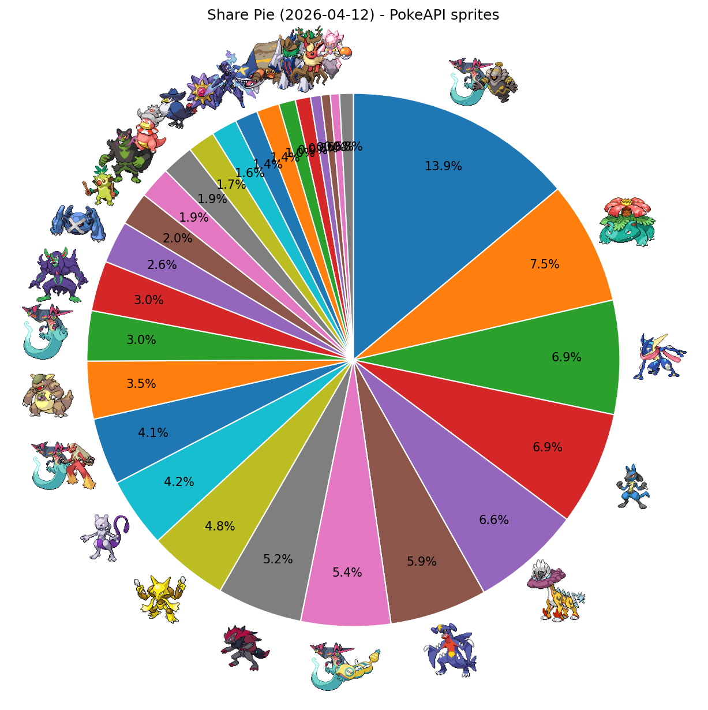
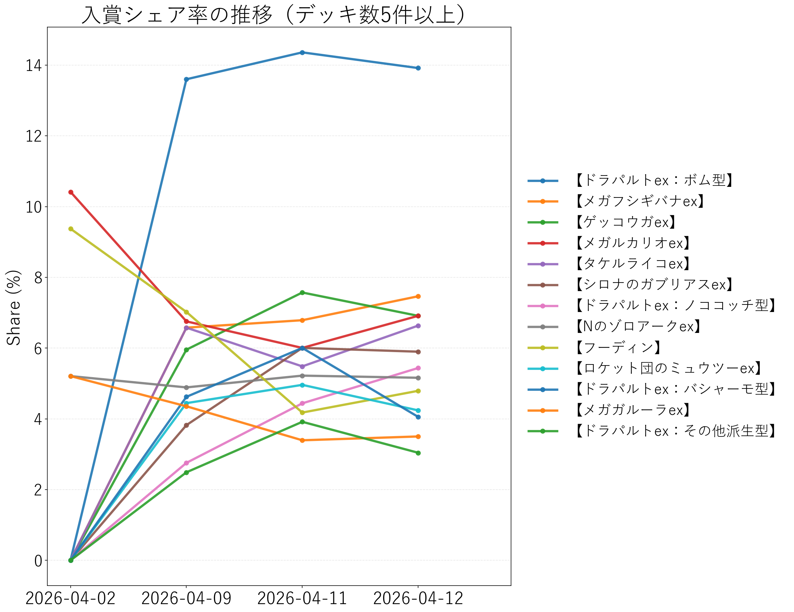

↔ 横スクロール
| 順位 | デッキタイプ | 入賞数 | シェア |
|---|---|---|---|
| 1 | 【ドラパルトex：ボム型】  | 151 | 13.92% |
| 2 | 【メガフシギバナex】 | 81 | 7.47% |
| 3 | 【ゲッコウガex】 | 75 | 6.91% |
| 4 | 【メガルカリオex】 | 75 | 6.91% |
| 5 | 【タケルライコex】 | 72 | 6.64% |
| 6 | 【シロナのガブリアスex】 | 64 | 5.90% |
| 7 | 【ドラパルトex：ノココッチ型】 | 59 | 5.44% |
| 8 | 【Nのゾロアークex】 | 56 | 5.16% |
| 9 | 【フーディン】 | 52 | 4.79% |
| 10 | 【ロケット団のミュウツーex】 | 46 | 4.24% |
| 11 | 【ドラパルトex：バシャーモ型】 | 44 | 4.06% |
| 12 | 【メガガルーラex】 | 38 | 3.50% |
| 13 | 【ドラパルトex：その他派生型】 | 33 | 3.04% |
| 14 | 【マリィのオーロンゲex】 | 33 | 3.04% |
| 15 | 【ダイゴのメタグロスex】 | 28 | 2.58% |
| 16 | 【おまつりおんど】 | 22 | 2.03% |
| 17 | 【イイネイヌ】 | 21 | 1.94% |
| 18 | 【ヤドキング】 | 21 | 1.94% |
| 19 | 【ロケット団のドンカラス】 | 18 | 1.66% |
| 20 | 【メガスターミーex】 | 17 | 1.57% |
| 21 | 【ソウブレイズex】 | 15 | 1.38% |
| 22 | 【メガサメハダーex】 | 15 | 1.38% |
| 23 | 【イワパレス】 | 11 | 1.01% |
| 24 | 【ブリジュラスex】 | 10 | 0.92% |
| 25 | 【ホップのオーロット】 | 7 | 0.65% |
| 26 | 【ブースターex】 | 6 | 0.55% |
| 27 | 【メガディアンシーex】 | 6 | 0.55% |
| 28 | その他 | 9 | 0.83% |

PokeAPIアイコン付きシェア円グラフ

入賞シェア率の推移